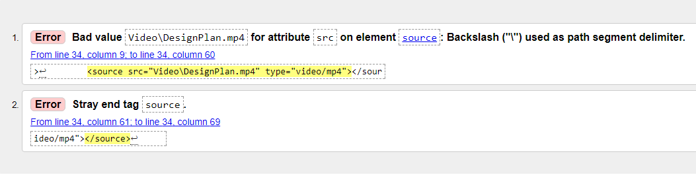
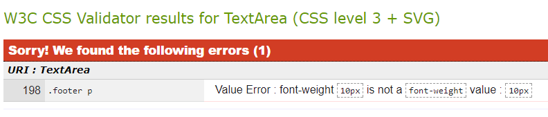

When I first began web development in late 2017, I was excited to learn and optimistic that I would be able to create a great website. This feeling quickly changed when I realised how hard it is to create even a simple webpage with minimum styling. Before university I had already experience in HTML and was quite confident in my ability. I could easily create a website and even stylise it slightly (in HTML) via the use of style tags. However, CSS has been a cruel mistress in the sense that I am finding it hard to style a webpage. In addition to this, I am heavily relying on “div” tags to stylise certain sections of a webpage and Flex boxing is on a whole different level. During my time in web development, I feel I feel I have certainly learned new things regarding CSS (I am capable of very basic CSS coding now) however, I feel I need to do more behind the scene research on how to do more advanced things in CSS to create a webpage that is equivalent to those in the modern day (doesn’t look like it was made in the 90s). I have also found it quite difficult to format images to a standard that does not show distortion. I have very little experience with photoshop or any editing tools thus the initial bombardment with possible tools to use is overwhelming. Overall, I feel I need to put in more effort when it comes to web dev (especially the CSS portion) otherwise I will fall behind and be doomed to create terrible looking websites.
Above is an image that i received when I placed most of my pages
The image above represents how when putting the index.html file in the validator, a few problems popped up. These errors all related to the video present on that page. This was probably due to how I wanted to adjust the video to fit phone sizes however, I was unsuccessful and forgot to remove experimental tags
Above is the validator for the CSS. As you can see, one error appeared regarding the p tag in the footer. Unfortunatly, i was unable to fix this issue